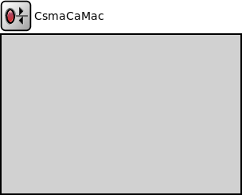

Package: inet.linklayer.csmaca
CsmaCaMac
compound moduleImplements an imaginary CSMA/CA-based MAC protocol with optional acknowledgements and a retry mechanism. With the appropriate settings, it can approximate basic 802.11b ad-hoc mode operation.
Parameters include:
- acknowledgements on/off
- bit rate (this is used for both data and ACK frames)
- protocol overhead: MAC header length, ACK frame length
- backoff parameters: minimum/maximum contention window (in slots), slot time, maximum retry count
- timing: interval to wait before transmitting ACK frame (SIFS) and before data frames in addition to the backoff slots (DIFS)
When acknowledgements are turned off, the MAC assumes that its transmissions are successful, so no frame is ever retransmitted.
When acknowledgements are turned on, the operation is as follows. On the receiver side, the change is quite simple: when the MAC correctly receives a data frame addressed to it, it responds with an ACK frame after a fixed-length gap (SIFS). If the originator of the data frame does not receive the ACK correctly within due time, it will initiate a retransmission. The contention window (from which the random backoff period is drawn) will be doubled for each retransmission until it reaches the maximum (and then it will stay constant for further retransmissions). After a given number of unsuccessful retries, the MAC will give up and discard the data frame, and will take the next data frame from the queue. The next frame will start with a clean slate (i.e. the contention window and the retry count will be reset). Giving up a frame will cause a link break signal to be emitted.
Note: This module does not contain a duplicate detection algorithm in order to keep its code simple and accessible, so lost ACKs will cause duplicates in the stream of packets sent up to higher layers.
Inheritance diagram
The following diagram shows inheritance relationships for this type. Unresolved types are missing from the diagram.
Extends
| Name | Type | Description |
|---|---|---|
| MacProtocolBase | simple module |
Module base for different MAC protocols. |
Parameters
| Name | Type | Default value | Description |
|---|---|---|---|
| interfaceTableModule | string | ||
| radioModule | string | "^.radio" |
The path to the Radio module //FIXME remove default value |
| address | string | "auto" |
MAC address as hex string (12 hex digits), or "auto". "auto" values will be replaced by a generated MAC address in init stage 0. |
| fcsMode | string | "declared" | |
| useAck | bool | true | |
| bitrate | double | ||
| headerLength | int | 17B |
maximum 255 byte, minimum 17B for serializing, see CsmaCaMacDataHeader |
| ackLength | int | 14B |
maximum 255 byte, minimum 14B for serializing, see CsmaCaMacAckHeader |
| sifsTime | double | 10us | |
| slotTime | double | 20us | |
| difsTime | double | sifsTime + 2 * slotTime | |
| ackTimeout | double | dropUnit(ackLength * 8) / dropUnit(bitrate) * 1s + sifsTime + slotTime |
measured from the end of data transmission; includes sifs, preamble, physical header, mac ack duration, 2x propagation time, by default assumes slot time > preamble + physical header + 2x propagation time |
| mtu | int | 1500 | |
| cwMin | int | 31 |
minimum contention window |
| cwMax | int | 1023 |
maximum contention window |
| cwMulticast | int | cwMin |
multicast contention window |
| retryLimit | int | 7 |
maximum number of retries |
Properties
| Name | Value | Description |
|---|---|---|
| display | i=block/rxtx | |
| class | CsmaCaMac |
Gates
| Name | Direction | Size | Description |
|---|---|---|---|
| upperLayerIn | input | ||
| upperLayerOut | output | ||
| lowerLayerIn | input | ||
| lowerLayerOut | output |
Signals
| Name | Type | Unit |
|---|---|---|
| linkBroken | inet::Packet |
Statistics
| Name | Title | Source | Record | Unit | Interpolation Mode |
|---|---|---|---|---|---|
| packetDropNotAddressedToUs | packet drop: not addressed to us | packetDropReasonIsNotAddressedToUs(packetDropped) | count, sum(packetBytes), vector(packetBytes) | none | |
| packetDropQueueOverflow | packet drop: queue overflow | packetDropReasonIsQueueOverflow(packetDropped) | count, sum(packetBytes), vector(packetBytes) | none | |
| packetDropRetryLimitReached | packet drop: retry limit reached | packetDropReasonIsRetryLimitReached(packetDropped) | count, sum(packetBytes), vector(packetBytes) | none | |
| linkBroken | link break | linkBroken | count | none | |
| packetDropIncorrectlyReceived | packet drop: incorrectly received | packetDropReasonIsIncorrectlyReceived(packetDropped) | count, sum(packetBytes), vector(packetBytes) | none |
Source code
// // Implements an imaginary CSMA/CA-based MAC protocol with optional // acknowledgements and a retry mechanism. With the appropriate settings, // it can approximate basic 802.11b ad-hoc mode operation. // // Parameters include: // - acknowledgements on/off // - bit rate (this is used for both data and ACK frames) // - protocol overhead: MAC header length, ACK frame length // - backoff parameters: minimum/maximum contention window (in slots), // slot time, maximum retry count // - timing: interval to wait before transmitting ACK frame (SIFS) and // before data frames in addition to the backoff slots (DIFS) // // When acknowledgements are turned off, the MAC assumes that its transmissions // are successful, so no frame is ever retransmitted. // // When acknowledgements are turned on, the operation is as follows. // On the receiver side, the change is quite simple: when the MAC correctly // receives a data frame addressed to it, it responds with an ACK frame after // a fixed-length gap (SIFS). If the originator of the data frame does not // receive the ACK correctly within due time, it will initiate a // retransmission. The contention window (from which the random backoff period is // drawn) will be doubled for each retransmission until it reaches the maximum // (and then it will stay constant for further retransmissions). After a given // number of unsuccessful retries, the MAC will give up and discard the data // frame, and will take the next data frame from the queue. The next frame // will start with a clean slate (i.e. the contention window and the retry // count will be reset). Giving up a frame will cause a link break signal // to be emitted. // // Note: This module does not contain a duplicate detection algorithm in order // to keep its code simple and accessible, so lost ACKs will cause duplicates // in the stream of packets sent up to higher layers. // module CsmaCaMac extends MacProtocolBase like IMacProtocol { parameters: string radioModule = default("^.radio"); // The path to the Radio module //FIXME remove default value string address @mutable = default("auto"); // MAC address as hex string (12 hex digits), or // "auto". "auto" values will be replaced by // a generated MAC address in init stage 0. string fcsMode @enum("declared","computed") = default("declared"); bool useAck = default(true); double bitrate @unit(bps); int headerLength @unit(B) = default(17B); // maximum 255 byte, minimum 17B for serializing, see CsmaCaMacDataHeader int ackLength @unit(B) = default(14B); // maximum 255 byte, minimum 14B for serializing, see CsmaCaMacAckHeader double sifsTime @unit(s) = default(10us); double slotTime @unit(s) = default(20us); double difsTime @unit(s) = default(sifsTime + 2 * slotTime); double ackTimeout @unit(s) = default(dropUnit(ackLength * 8) / dropUnit(bitrate) * 1s + sifsTime + slotTime); // measured from the end of data transmission; includes sifs, preamble, physical header, mac ack duration, 2x propagation time, by default assumes slot time > preamble + physical header + 2x propagation time int mtu = default(1500); int cwMin = default(31); // minimum contention window int cwMax = default(1023); // maximum contention window int cwMulticast = default(cwMin); // multicast contention window int retryLimit = default(7); // maximum number of retries @class(CsmaCaMac); @signal[linkBroken](type=inet::Packet); @statistic[linkBroken](title="link break"; source=linkBroken; record=count; interpolationmode=none); @statistic[packetDropIncorrectlyReceived](title="packet drop: incorrectly received"; source=packetDropReasonIsIncorrectlyReceived(packetDropped); record=count,sum(packetBytes),vector(packetBytes); interpolationmode=none); @statistic[packetDropNotAddressedToUs](title="packet drop: not addressed to us"; source=packetDropReasonIsNotAddressedToUs(packetDropped); record=count,sum(packetBytes),vector(packetBytes); interpolationmode=none); @statistic[packetDropQueueOverflow](title="packet drop: queue overflow"; source=packetDropReasonIsQueueOverflow(packetDropped); record=count,sum(packetBytes),vector(packetBytes); interpolationmode=none); @statistic[packetDropRetryLimitReached](title="packet drop: retry limit reached"; source=packetDropReasonIsRetryLimitReached(packetDropped); record=count,sum(packetBytes),vector(packetBytes); interpolationmode=none); }File: src/inet/linklayer/csmaca/CsmaCaMac.ned
 This documentation is released under the Creative Commons license
This documentation is released under the Creative Commons license